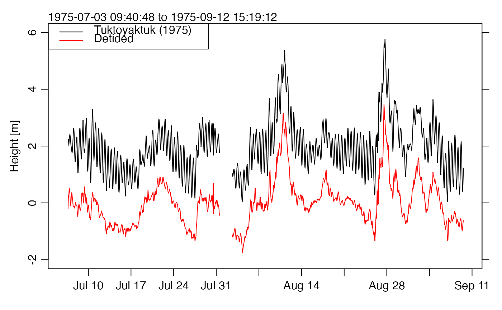

This sea-level dataset is provided with in Appendix 7.2 of Foreman (1977)
and also with the T_TIDE package (Pawlowicz et al., 2002). It results
from measurements made in 1975 at Tuktoyaktuk, Northwest Territories,
Canada.
The data were based on the T_TIDE dataset, which in turn
seems to be based on Appendix 7.2 of Foreman (1977). Minor editing was on
file format, and then the sealevelTuktoyaktuk object was created
using as.sealevel().
The data set contains 1584 points, some of which have NA for sea-level height.
Although Foreman's Appendix 7.2 states that times are in Mountain standard
time, the timezone is set to UTC in the present case, so that the
results will be similar to those he provides in his Appendix 7.3.
Until Jan 6, 2018, the time in this dataset had been increased by 7 hours. However, this alteration was removed on this date, to make for simpler comparison of amplitude and phase output with the results obtained by Foreman (1977) and Pawlowicz et al. (2002).
Foreman, M. G. G., 1977. Manual for tidal heights analysis and prediction. Pacific Marine Science Report 77-10, Institute of Ocean Sciences, Patricia Bay, Sidney, BC, 58pp.
Pawlowicz, Rich, Bob Beardsley, and Steve Lentz, 2002. Classical tidal
harmonic analysis including error estimates in MATLAB using T_TIDE.
Computers and Geosciences, 28, 929-937.
Other datasets provided with oce:
adp,
adv,
amsr,
argo,
cm,
coastlineWorld,
ctdRaw,
ctd,
echosounder,
landsat,
lisst,
lobo,
met,
ocecolors,
rsk,
sealevel,
section,
topoWorld,
wind,
xbt
Other things related to sealevel data:
[[,sealevel-method,
[[<-,sealevel-method,
as.sealevel(),
plot,sealevel-method,
read.sealevel(),
sealevel-class,
sealevel,
subset,sealevel-method,
summary,sealevel-method
# \donttest{
library(oce)
data(sealevelTuktoyaktuk)
time <- sealevelTuktoyaktuk[["time"]]
elevation <- sealevelTuktoyaktuk[["elevation"]]
oce.plot.ts(time, elevation, type='l', ylab="Height [m]", ylim=c(-2, 6))
legend("topleft", legend=c("Tuktoyaktuk (1975)","Detided"),
col=c("black","red"),lwd=1)
tide <- tidem(sealevelTuktoyaktuk)
#> Note: the tidal record is too short to fit for constituents: SA SSA MSM MF SIG1 RHO1 TAU1 BET1 CHI1 PI1 P1 S1 PSI1 PHI1 THE1 SO1 OQ2 2N2 NU2 GAM2 H1 H2 MKS2 LDA2 T2 R2 K2 MSN2 SO3 MK4 SK4 2MK6 MSK6
detided <- elevation - predict(tide)
lines(time, detided, col="red")

# }